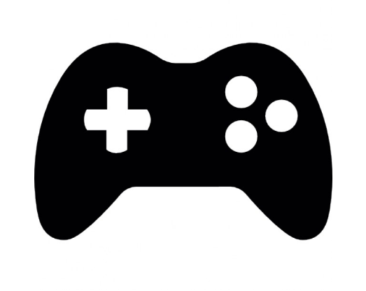
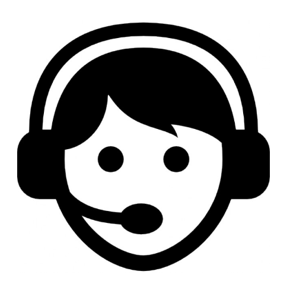

Video Games - Knowledge base Wiki
Supporting video games is not for the weak hearted. Gamers want everything and they want it now!
As a Technical Customer Support representative, you need to be on top of things and ready to answer anything, in your native language and in English, on the phone or by emails, for all the games you support, on various consoles and devices.
The players abilities range from PC expert, to low digital skills, including parents who don't know the games but calling on behalf of their kids. To get the answer fast, you need a good knowledge base. The team had various native speakers: Danish, French, German, Italian, Spanish, and Swedish.
 
Disclaimer:As I worked under a Non Disclosure Agreement, I'm unable to mention games, clients, or use pictures and work documents.
Challenges
Help and information was available in a Wiki, but sometime dated, or duplicated, hard to find, not in the right language or incorrect. Some colleagues had their own notes of resolutions and templates so you relied on them being available. Some information were in various emails received by the clients (Games Companies).
My role
I requested to spend 20% of my work hours to rearrange the wiki and prepare it for a coming game launch, and over a month:
- I assessed what was available but not where you would expect it
- deleted or corrected wrong information
- collected templates and resolutions from colleagues and from emails
- discussed the best Information Architecture (IA) with others (my colleagues were my users)
- started to re-organised based on the agreed IA
- tested it with them, got their feedback and improved on it
- highlighted and requested missing templates translations
The week prior to the game launch:
- I collected images from the new game, DLC, characters, provided by the client
- started a skeleton IA based on experience of the most frequent questions we get for games launches
- discussed it with colleagues and re-organised based on their feedback
- wrote the French and English versions
- requested translations from my colleagues and added them
After the launch:
- made adjustments depending on the most frequent requests from our customers (the customers were my users at that point)
- created guidance for colleagues to update the Wiki themselves when needed
- progressively re-used the same IA for older game's Knowledge bases in the wiki, so we (representatives) could use a now familiar pattern to find the information we need.
Outcome
My manager was initially reluctant for me to spend time on re-designing the wiki, but after the launch of the game, he realised that we had been much more efficient thanks to it. The whole team felt more confident than usual and it was easy to add new information.
I was allowed to spend more time on it to redesign other parts of the wiki. Further game launches were prepared the same way. The whole team embraced the wiki and started to use it and maintain it as a single source of information, instead of keeping their own notes or emails.